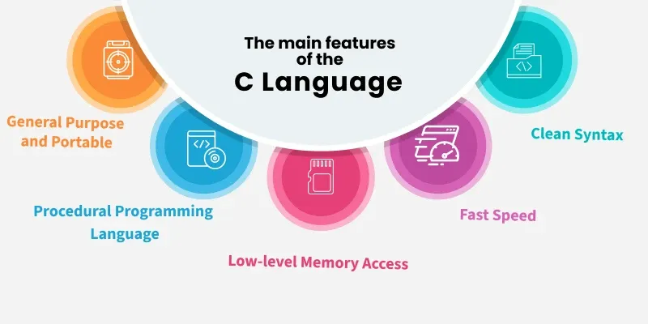

Structure of C

C is a general-purpose procedural programming language initially developed by Dennis Ritchie in 1972 at Bell Laboratories of AT&T Labs. It was mainly created as a system programming language to write the UNIX operating system.
Why Learn C? C is considered mother of all programming languages as many later languages have borrowed syntax/features directly or indirectly from the C language like the syntax of Java, PHP, JavaScript, and many other languages that are mainly based on the C language. So, if a person learns C programming first, it will help them to learn any modern programming language as well provide a deeper understanding of the fundamentals of programming and underlying architecture of the operating system like pointers, working with memory locations etc.
Hello World Program in C
#includeint main(void) { // This prints "Hello World" printf("Hello World"); return 0; }
1. Install a C Compiler:
- For Windows: Use MinGW or TDM-GCC.
- For macOS: Use Xcode Command Line Tools.
- For Linux: GCC is usually pre-installed or can be installed via package manager.
2. Choose an IDE or Text Editor:
- IDEs: Code::Blocks, Dev-C++, CLion, Visual Studio.
- Text Editors: Visual Studio Code, Sublime Text, Atom, or even Notepad++.
- For Visual Studio Code, install the C/C++ extension for better support.
Visual Studio code
-for online coding, you can use platforms like Replit, CodeChef IDE, or Paiza.IO.
Paiza.IO
Replit
CodeChef IDE
3. Write Your First C Program:
- Open your IDE or text editor.
- Create a new file with a `.c` extension.
- Write a simple C program, e.g.:
```c
#include
int main() {
printf("Hello, World!\n");
return 0;
}
```
4. Compile and Run:
- If using an IDE, there will typically be a "Run" button.
- If using a terminal, navigate to the directory where your file is saved and run:
```
gcc -o hello hello.c
./hello
```
In C, there are many functions used for output in different situations, but the most commonly used function for output is printf(). The printf() function is used to print formatted output to the standard output stdout (which is generally the console screen). It is one of the most commonly used functions in C.
#include
int main() {
printf("Hello, World!\n");
return 0;
}
These functions provide ways to read data from the user and use it in the programs . Among the most commonly used input functions are scanf() for reading formatted data and getchar() for reading a single character. scanf() is used to read user input from the console. It takes the format string and the addresses of the variables where the input will be stored.
#include
int main() {
int age;
printf("Enter your age: ");
// Reads an integer
scanf("%d", &age);
// Prints the age
printf("Age is: %d\n", age);
return 0;
}
In C programming, tokens are the smallest units in a program that have meaningful representations. Tokens are the building blocks of a C program, and they are recognized by the C compiler to form valid expressions and statements. Tokens can be classified into various categories, each with specific roles in the program.

In C Programming language, there are many rules so to avoid different types of errors. One of such rule is not able to declare variable names with auto, long, etc. This is all because these are keywords. Let us check all keywords in C language.
Defination : The data type specifies the size and type of information the variable will store.
int is a data type that is used to store integer values. It can store both positive and negative whole numbers. The size of an int is typically 4 bytes (32 bits) on most systems.
float is a data type that is used to store single-precision floating-point numbers. It can store decimal values with a limited precision. The size of a float is typically 4 bytes (32 bits).
double is a data type that is used to store double-precision floating-point numbers. It can store decimal values with higher precision than float. The size of a double is typically 8 bytes (64 bits).
char is a data type that is used to store single characters. It can store any character from the ASCII character set. The size of a char is typically 1 byte (8 bits).
string is collections of characters and sequnces and it should be enclosed by double ot single qoute ("",'')
#include
int main() {
int age = 25; // Integer data type
float height = 5.9; // Float data type
double salary = 50000.50; // Double data type
char grade = 'A'; // Character data type
string name="saarika and Groups"; // string data type
printf("Age: %d\n", age);
printf("Height: %.1f\n", height);
printf("Salary: %.2lf\n", salary);
printf("Grade: %c\n", grade);
printf("Name: %s\n", name);
return 0;
}
Age: 25
Height: 5.9
Salary: 50000.50
Grade: A
Name:saarika and Groups
%d or %i is used for int data type
%f or %F is used for float data type
%lf is used for diuble data type
%c is used for char data types
%s is used for string data types
In C programming, control flow statements are used to control the order in which instructions are executed in a program. These statements let the program make decisions, repeat tasks, and jump to specific parts of the code based on certain conditions.
The if statement allows the program to execute a block of code only if a specified condition evaluates to true. It is used to make decisions and control the flow based on conditions.
syntax:
if (condition) {
// code to execute if condition is true
}

If the if condition is false, the else if condition is evaluated. If true, the corresponding code block is executed, and the remaining else if and else blocks are skipped
syntax:
if (condition) {
// code if condition is true
} else {
// code if condition is false
}

An else if ladder, also known as an if-else if-else statement, is a programming construct used to check multiple conditions sequentially. It allows a program to execute different blocks of code based on which condition is true, with a final else block to handle the case where none of the conditions are met.
syntax:
if (condition1) {
// code
} else if (condition2) {
// code
} else {
// default code
}

A nested if statement is an if statement placed inside another if or else statement. This allows for more complex decision-making logic by evaluating multiple conditions in a hierarchical manner. Essentially, the inner if or else block is only executed if the outer if condition is true.
if(condition){
if(condition){
//if its true
}else{
//if its false
}
}else if(condition){
//statements
}else{
//statement
}

The switch statement selects one block of code to execute from multiple options, based on the value of an expression. It is useful when you have many possible values to check.
switch (expression) {
case value1:
// code
break;
case value2:
// code
break;
default:
// code
}

#includeint main() { int number, i; // if-else example printf("Enter an integer: "); scanf("%d", &number); if (number > 0) printf("The number is positive.\n"); else if (number < 0) printf("The number is negative.\n"); else printf("The number is zero.\n"); // switch statement example printf("\nChoose a day (1-3): "); scanf("%d", &number); switch (number) { case 1: printf("Monday\n"); break; case 2: printf("Tuesday\n"); break; case 3: printf("Wednesday\n"); break; default: printf("Invalid choice.\n"); }
Looping statements allow you to execute a block of code repeatedly based on a condition. C provides several types of loops:
The for loop repeats a block of code a specific number of times, based on an initialization, a condition, and an increment/decrement expression.
syntax:
for (initialization; condition; increment/decrement) {
// code to be executed
}
#include
int main()
{
int i;
// for loop example
for (i = 1; i <= 5; i++) {
printf("Iteration %d\n", i);
}
return 0;
}

The while loop repeatedly executes a block of code as long as the specified condition remains true. The condition is checked before each iteration.
syntax:
while (condition) {
// code to be executed
}
Example Program
#include
int main() {
int i = 1;
// while loop example
while (i <= 5) {
printf("Iteration %d\n", i);
i++;
}
return 0;
}

Executes the block at least once, then checks the condition.
syntax:
do {
// code to be executed
} while (condition);
Example Program
#include
int main() {
int i = 1;
// do-while loop example
do {
printf("Iteration %d\n", i);
i++;
} while (i <= 5);
return 0;
}

Jump statements allow you to alter the flow of control in a program. C provides several jump statements:
The break statement is used to exit from a loop or switch statement prematurely.
Example Program
#include
int main() {
for (int i = 1; i <= 10; i++) {
if (i == 5) {
break; // Exit the loop when i is 5
}
printf("%d ", i);
}
return 0;
}

The continue statement skips the current iteration of a loop and proceeds to the next iteration.
Example Program
#include
int main() {
for (int i = 1; i <= 10; i++) {
if (i % 2 == 0) {
continue; // Skip even numbers
}
printf("%d ", i);
}
return 0;
}

The goto statement allows you to jump to a specific label in the code. It is generally discouraged due to its potential to create unstructured code.
Example Program
#include
int main() {
int i = 1;
start: // Label
if (i <= 5) {
printf("%d ", i);
i++;
goto start; // Jump back to the label
}
return 0;
}

The return statement is used to exit from a function and optionally return a value.
Example Program
#include
int add(int a, int b) {
return a + b; // Return the sum of a
A function definition informs the compiler about the function's name, its return type, and what it does. It is compulsory to define a function before it can be called..
return_type name () {
// Body of function
};
A function definition provides the actual body of the function, where the logic is implemented. It includes the return type, function name, parameters (if any), and the code block that defines what the function does.
Example Program
#include
// Function definition
void hello() {
printf("Hello, World!\n");
}
int main() {
hello(); // Function call
return 0;
}
Hello, World!
After defining a function, you can use it anywhere in the program by simply calling it with its name followed by parentheses ().
A function declaration, also known as a function prototype, informs the compiler about the function's name, return type, and parameters (if any) without providing the actual body of the function. It is typically placed before the main function or in a header file.
Example Program
#include
// Function declaration
void hello();
int main() {
hello(); // Function call
return 0;
}
// Function definition
void hello() {
printf("Hello, World!\n");
}
Hello, World!
Functions can accept parameters, which are values passed to the function when it is called. Parameters allow functions to operate on different data without changing their code.
Example Program
#include
// Function declaration with parameters
void greet(char name[]);
int main() {
greet("Saarika"); // Function call with argument
return 0;
}
// Function definition with parameters
void greet(char name[]) {
printf("Hello, %s!\n", name);
}
Hello, Saarika
Functions can return values to the caller. The return type of the function specifies the type of value it will return. If a function does not return a value, its return type is void.
Example Program
#include
// Function declaration with return type
int add(int a, int b);
int main() {
int result = add(5, 3); // Function call with arguments
printf("Sum: %d\n", result);
return 0;
}
// Function definition with return type
int add(int a, int b) {
return a + b; // Return the sum
}
Sum: 8
For further Details visit geeksforgeeks
An array is a collection of elements of the same data type, stored in contiguous memory locations. It allows you to store multiple values in a single variable, making it easier to manage and manipulate related data.
Arrays are useful when you need to work with a fixed-size collection of elements, such as a list of numbers, characters, or any other data type. They provide a way to group related data together and access individual elements using an index.
A single-dimensional array is a linear collection of elements, where each element can be accessed using a single index. It is the simplest form of an array and is often used to store a list of related values.
data_type array_name[size];
Example Program
#include
int main() {
int numbers[5]; // Declaration of an integer array with 5 elements
return 0;
}
You can initialize a single-dimensional array at the time of declaration by providing values in curly braces.
data_type array_name[size] = {value1, value2, ...};
Example Program
#include
int main() {
int numbers[5] = {1, 2, 3, 4, 5}; // Initialization of an integer array with 5 elements
return 0;
}

You can access individual elements of a single-dimensional array using an index, which starts from 0.
array_name[index];
Example Program
#include
int main() {
int numbers[5] = {1, 2, 3, 4, 5};
printf("Element at index 0: %d\n", numbers[0]); // Accessing element at index 0
return 0;
}
A multi-dimensional array is an array of arrays, allowing you to create a grid-like structure. The most common type is a two-dimensional array, which can be visualized as a table with rows and columns.
data_type array_name[size1][size2];
Example Program
#include
int main() {
int matrix[3][3]; // Declaration of a 3x3 integer matrix
return 0;
}
You can initialize a multi-dimensional array at the time of declaration by providing nested curly braces.
data_type array_name[size1][size2] = {{value11, value12, ...}, {value21, value22, ...}, ...};
Example Program
#include
int main() {
int matrix[2][2] = {{1, 2}, {3, 4}}; // Initialization of a 2x2 integer matrix
return 0;
}
You can access individual elements of a multi-dimensional array using two indices: one for the row and one for the column.
array_name[row_index][column_index];
Example Program
#include
int main() {
int matrix[2][2] = {{1, 2}, {3, 4}};
printf("Element at (0, 0): %d\n", matrix[0][0]); // Accessing element at row 0, column
printf("Element at (1, 1): %d\n", matrix[1][1]); // Accessing element at row 1, column 1
return 0;
}
Element at (0, 0): 1
Element at (1, 1): 4
A dynamic array is an array whose size can be determined at runtime. It allows you to create arrays with a size that is not known at compile time. Dynamic arrays are typically implemented using pointers and memory allocation functions.
data_type *array_name;
Example Program
#include
#include
int main() {
int *dynamicArray; // Declaration of a pointer for dynamic array
return 0;
}
You can allocate memory for a dynamic array using the malloc() function from the stdlib.h library.
dynamicArray = (data_type *)malloc(size * sizeof(data_type));
Example Program
#include
#include
int main() {
int *dynamicArray;
int size = 5;
dynamicArray = (int *)malloc(size * sizeof(int)); // Allocating memory for a dynamic array of integers
return 0;
}
You can access individual elements of a dynamic array using an index, just like with regular arrays.
dynamicArray[index];
Example Program
#include
#include
int main() {
int *dynamicArray;
int size = 5;
dynamicArray = (int *)malloc(size * sizeof(int)); // Allocating memory for a dynamic array of integers
// Initializing the dynamic array
for (int i = 0; i < size; i++) {
dynamicArray[i] = i + 1; // Assigning values to the array
}
// Accessing and printing the elements of the dynamic array
for (int i = 0; i < size; i++) {
printf("Element at index %d: %d\n", i, dynamicArray[i]);
}
free(dynamicArray); // Freeing the allocated memory
return 0;
}
Element at index 0: 1
Element at index 1: 2
Element at index 2: 3
Element at index 3: 4
Element at index 4: 5
In this example, we declared a dynamic array, allocated memory for it, initialized its elements, accessed and printed the elements, and finally freed the allocated memory using the free() function.
A pointer is a variable that stores the memory address of another variable. Instead of holding a direct value, it holds the address where the value is stored in memory. It is the backbone of low-level memory manipulation in C. Accessing the pointer directly will just give us the address that is stored in the pointer.For Example,
#include
int main() {
int var = 10;
// Store address of var variable
int* ptr = &var;
// Directly accessing ptr
printf("%d", ptr);
return 0;
}
0x7fffa0757dd4

Why Learn Pointer?
A pointer is declared by specifying its name and type, just like simple variable declaration but with an asterisk (*) symbol added before the pointer's name.
data_type* name
Here, data_type defines the type of data that the pointer is pointing to. An integer type pointer can only point to an integer. Similarly, a pointer of float type can point to a floating-point data, and so on.
int *ptr;
In the above statement, pointer ptr can store the address of an integer. It is pronounced as pointer to integer.
Pointer initialization means assigning some address to the pointer variable. In C, the (&) addressof operator is used to get the memory address of any variable. This memory address is then stored in a pointer variable.
int var = 10;
// Initializing ptr
int *ptr = &var;
The size of a pointer in C depends on the architecture (bit system) of the machine, not the data type it points to.
The size remains constant regardless of the data type (int*, char*, float*, etc.). We can verify this using the sizeof operator.
#include
int main() {
int *ptr1;
char *ptr2;
// Finding size using sizeof()
printf("%zu\n", sizeof(ptr1));
printf("%zu", sizeof(ptr2));
return 0;
}
8
8
The reason for the same size is that the pointers store the memory addresses, no matter what type they are. As the space required to store the addresses of the different memory locations is the same, the memory required by one pointer type will be equal to the memory required by other pointer types.
There are 4 special types of pointers that used or referred to in different contexts:
The NULL Pointers are those pointers that do not point to any memory location. They can be created by assigning NULL value to the pointer. A pointer of any type can be assigned the NULL value.
#include
int main() {
// Null pointer
int *ptr = NULL;
return 0;
}
NULL pointers are generally used to represent the absence of any address. This allows us to check whether the pointer is pointing to any valid memory location by checking if it is equal to NULL.
The void pointers in C are the pointers of type void. It means that they do not have any associated data type. They are also called generic pointers as they can point to any type and can be typecasted to any type.
#include
int main() {
// Void pointer
void *ptr;
return 0;
}
The wild pointers are pointers that have not been initialized with something yet. These types of C-pointers can cause problems in our programs and can eventually cause them to crash. If values are updated using wild pointers, they could cause data abort or data corruption.
#include
int main() {
// Wild Pointer
int *ptr;
return 0;
}
A pointer pointing to a memory location that has been deleted (or freed) is called a dangling pointer. Such a situation can lead to unexpected behavior in the program and also serve as a source of bugs in C programs.
#include
#include
int main() {
int* ptr = (int*)malloc(sizeof(int));
// After below free call, ptr becomes a dangling pointer
free(ptr);
printf("Memory freed\n");
// removing Dangling Pointer
ptr = NULL;
return 0;
}
The memory layout of a program refers to how the program’s data is stored in the computer memory during its execution. Understanding this layout helps developers manage memory more efficiently and avoid issues such as segmentation faults and memory leaks. A C program's memory is organized into specific regions (segments) as shown in the below image, each serving distinct purposes for program execution.

The text segment (also known as code segment) is where the executable code of the program is stored. It contains the compiled machine code of the program's functions and instructions. This segment is usually read-only and stored in the lower parts of the memory to prevent accidental modification of the code while the program is running. The size of the text segment is determined by the number of instructions and the complexity of the program.
The data segment stores global and static variables that are created by the programmer. It is present just above the code segment of the program. It can be further divided into two parts:
Heap segment is where dynamic memory allocation usually takes place. The heap area begins at the end of the BSS segment and grows towards the larger addresses from there. It is managed by functions such as malloc(), realloc(), and free() which in turn may use the brk and sbrk system calls to adjust its size. The heap segment is shared by all shared libraries and dynamically loaded modules in a process. For example, the variable pointed by ptr will be stored in the heap segment:
#include
int main() {
// Create an integer pointer
int *ptr = (int*) malloc(sizeof(int) * 10);
return 0;
}
The stack is a region of memory used for local variables and function call management. Each time a function is called, a stack frame is created to store local variables, function parameters, and return addresses. This stack frame is stored in this segment. The stack segment is generally located in the higher addresses of the memory and grows opposite to heap. They adjoin each other so when stack and heap pointer meet, free memory of the program is said to be exhausted.
#include
void func() {
// Stored in the stack
int local_var = 10;
}
int main() {
func();
return 0;
}
#include
#include
// Global variable
int gvar = 66;
// Constant global variable
const int cgvar = 1010;
// uninitialized global variable
int ugvar;
void foo() {
// Local variable
int lvar = 1;
printf("Address of lvar:\t%p", (void*)&lvar);
}
int main() {
// Heap variable
int *hvar = (int*)malloc(sizeof(int));
// Checking and comparing address of different
// elements of program that should be stored in
// different segements of the memory
printf("Address of foo:\t\t%p\n", (void*)&foo);
printf("Address of cgvar:\t%p\n", (void*)&cgvar);
printf("Address of gvar:\t%p\n", (void*)&gvar);
printf("Address of ugvar:\t%p\n", (void*)&ugvar);
printf("Address of hvar:\t%p\n", (void*)hvar);
foo();
return 0;
}
Address of foo: 0x60d723996189
Address of cgvar: 0x60d723997004
Address of gvar: 0x60d723999010
Address of ugvar: 0x60d723999018
Address of hvar: 0x60d73b9072a0
Address of lvar: 0x7ffd0e85e0c4
In C, a structure is a user-defined data type that can be used to group items of possibly different types into a single type. The struct keyword is used to define a structure. The items in the structure are called its member and they can be of any valid data type.
#include
// Defining a structure
struct A {
int x;
};
int main() {
// Creating a structure variable
struct A a;
// Initializing member
a.x = 11;
printf("%d", a.x);
return 0;
}
11
In this example, a structure A is defined to hold an integer member x. A variable a of type struct A is created and its member x is initialized to 11 by accessing it using dot operator. The value of a.x is then printed to the console. Structures are used when you want to store a collection of different data types, such as integers, floats, or even other structures under a single name. To understand how structures are foundational to building complex data structures,
A structure is defined using the struct keyword followed by the structure name and its members. It is also called a structure template or structure prototype, and no memory is allocated to the structure in the declaration.
struct structure_name {
data_type1 member1;
data_type2 member2;
...
};
After structure definition, we have to create variable of that structure to use it. It is similar to the any other type of variable declaration:
struct strcuture_name var;
We can also declare structure variables with structure definition.
struct structure_name {
...
}var1, var2....;
1.The structure can be used to define the custom data types that can be used to create some complex data types such as dates, time, complex numbers, etc. which are not present in the language. 2.It can also be used in data organization where a large amount of data can be stored in different fields. 3.Structures are used to create data structures such as trees, linked lists, etc. 4.They can also be used for returning multiple values from a function.
In C, union is a user-defined data type that can contain elements of the different data types just like structure. But unlike structures, all the members in the C union are stored in the same memory location. Due to this, only one member can store data at the given point in time.
A union is declared similarly to a structure. Provide the name of the union and define its member variables:
union union_name{
type1 member1;
type2 member2;
type3 member3;
. .
. .
}
After declaration of a union then create a variable of union like below:
union_name variable_name;
We can also declare a variable at the declaration of union
union union_name{
type1 member1;
type2 member2;
type3 member3;
. .
. .
}variable_name;
The value of a union variable can be accessed using the dot (.) operator. A value can be assigned to the union variable using the assignment operator (=). In a union, all the variables share the same memory, so only one variable can store a value at a time. If we try to access the value of another variable, the behavior will be undefined.
#include
// Define a union with
// different data types
union Student {
int rollNo;
float height;
char firstLetter;
};
int main() {
// Declare a union variable
union Student data;
// Assign and print the roll number
data.rollNo = 21;
printf("%d\n", data.rollNo);
data.height = 5.2;
printf("%.2f\n", data.height);
data.firstLetter = 'N';
printf("%c", data.firstLetter);
return 0;
}
21
5.20
N
In C, an enumeration (or enum) is a user defined data type that contains a set of named integer constants. It is used to assign meaningful names to integer values, which makes a program easy to read and maintain.
An enum must be defined before we can use it in program.
enum enum_name {
n1, n2, n3, ...
};
where, n1, n2, n3, ... are names assigned to an integer value. By default, first name n1 is assigned 0, n2 is assigned 1 and the subsequent ones are incremented by 1.
enum calculate {
SUM, DIFFERENCE, PRODUCT, QUOTIENT
};
After enum is defined, we can create variables of that enum by using its specified name.
enum_name v;
An enum variable can be initialized either with a name defined in the enum definition or directly with its integer value.
#include
// Defining enum
enum direction {
EAST, NORTH, WEST, SOUTH
};
int main() {
// Creating enum variable
enum direction dir = NORTH;
printf("%d\n", dir);
// This is valid too
dir = 3;
printf("%d", dir);
return 0;
}
1
3
File handling in C is the process in which we create, open, read, write, and close operations on a file. C language provides different functions such as fopen(), fwrite(), fread(), fseek(), fprintf(), etc. to perform input, output, and many different C file operations in our program.
So far, the operations in C program are done on a prompt/terminal in which the data is only stored in the temporary memory (RAM). This data is deleted when the program is closed. But in the software industry, most programs are written to store the information fetched from the program. The use of file handling is exactly what the situation calls for. File handling allows us to read and write data on files stored in the secondary memory such as hard disk from our C program.
C language provides the following different operations that we can perform on a file from our C program:
A file is a container of data. It can be classified into two types based on the way the file stores the data. They are as follows:

A text file contains data in the form of ASCII characters and is generally used to store a stream of characters.
A binary file contains data in binary form (i.e. 0's and 1's) instead of ASCII characters. They contain data that is stored in a similar manner to how it is stored in the main memory.
The file operations are performed by using the functions provided as the part of file handling API of C language. Following is the list of commonly used functions:

In C, a variable defined in a function is stored in the stack memory. The requirement of this memory is that it needs to know the size of the data to memory at compile time (before the program runs). Also, once defined, we can neither change the size nor completely delete the memory. To resolve this, C provides a feature called Dynamic Memory Allocation. It allows you to allocate memory at runtime, giving your program the ability to handle data of varying sizes. Dynamic resources are stored in the heap memory instead of the stack. This feature is useful in a variety of situations. For example, changing the size of an array according to our requirement.
As we know, the size of an array in C is fixed and should be known at compile time. There can be two problems: The size of the array is not sufficient to store all the elements. To resolve this, one might set the size to store the maximum theoretically possible elements. This creates another problem.This size of the array is much more than what is required to store the elements. This leads to the wastage of memory. This is where the dynamic memory allocation comes in. The size of the array can be increased if more elements are to be inserted and decreased of less elements are inserted. Moreover, there is no need to estimate the max possible size. The size can be decided at runtime according to the requirement.
The malloc() (stands for memory allocation) function is used to allocate a single block of contiguous memory on the heap at runtime. The memory allocated by malloc() is uninitialized, meaning it contains garbage values.
malloc(size);
where size is the number of bytes to allocate. This function returns a void pointer to the allocated memory that needs to be converted to the pointer of required type to be usable. If allocation fails, it returns NULL pointer.
#include
#include
int main() {
int *ptr = (int *)malloc(20);
// Populate the array
for (int i = 0; i < 5; i++)
ptr[i] = i + 1;
// Print the array
for (int i = 0; i < 5; i++)
printf("%d ", ptr[i]);
return 0;
}

The calloc() (stands for contiguous allocation) function is similar to malloc(), but it initializes the allocated memory to zero. It is used when you need memory with default zero values.
calloc(n, size);
where n is the number of elements and size is the size of each element in bytes. This function also returns a void pointer to the allocated memory that is converted to the pointer of required type to be usable. If allocation fails, it returns NULL pointer.
#include
#include
int main() {
int *ptr = (int *)calloc(5, sizeof(int));
// Checking if failed or pass
if (ptr == NULL) {
printf("Allocation Failed");
exit(0);
}
// No need to populate as already
// initialized to 0
// Print the array
for (int i = 0; i < 5; i++)
printf("%d ", ptr[i]);
return 0;
}

The memory allocated using functions malloc() and calloc() is not de-allocated on their own. The free() function is used to release dynamically allocated memory back to the operating system. It is essential to free memory that is no longer needed to avoid memory leaks.
free(ptr);
where ptr is the pointer to the allocated memory. After freeing a memory block, the pointer becomes invalid, and it is no longer pointing to a valid memory location.
#include
#include
int main() {
int *ptr = (int *)calloc(sizeof(int), 5);
// Do some operations.....
for (int i = 0; i < 5; i++)
printf("%d ", ptr[i]);
// Free the memory after completing
// operations
free(ptr);
return 0;
}

realloc() function is used to resize a previously allocated memory block. It allows you to change the size of an existing memory allocation without needing to free the old memory and allocate a new block.
realloc(ptr, new_size);
where, ptr is the pointer to the previously allocated memory block and new_size is the reallocated size that the memory block should have in bytes. This function returns a pointer to the newly allocated memory, or NULL if the reallocation fails. If it fails, the original memory block remains unchanged.
#include
#include
int main() {
int *ptr = (int *)malloc(5 * sizeof(int));
// Resize the memory block to hold 10 integers
ptr = (int *)realloc(ptr, 10 * sizeof(int));
// Check for allocation failure
if (ptr == NULL) {
printf("Memory Reallocation Failed");
exit(0);
}
return 0;
}

Preprocessors are programs that process the source code before the actual compilation begins. They are not part of the compilation process but operate separately, allowing programmers to modify the code before compilation. It is the first step that the C source code goes through when being converted into an executable file.

The preprocessor directives are the instructions to the preprocessor for doing some tasks such as text substitutions, macro expansions, including header files, and many more before compiling the code. All of these preprocessor directives begin with a ‘#’ hash symbol. One of the most commonly used preprocessors is #include which is used to include the header files for different libraries in C programs. C provides more directives for different functionalities.
The following table lists all the preprocessor directives in C:
Macros are used to define constants or create functions that are substituted by the preprocessor before the code is compiled. The two preprocessors #define and #undef are used to create and remove macros in C.
#define token value
#undef token
where after preprocessing, the token will be expanded to its value in the program.
#include
// Macro Definition
#define LIMIT 5
int main(){
for (int i = 0; i < LIMIT; i++) {
printf("%d \n", i);
}
return 0;
}
0
1
2
3
4
In the above program, before the compilation begins, the word LIMIT is replaced with 5. The word 'LIMIT' in the macro definition is called a macro template and '5' is macro expansion.
In C programming, error handling is typically done using functions that handle runtime errors, returning error codes or messages to notify the programmer about the failure or incorrect operation. Since C does not provide built-in exception handling like other high-level languages (e.g., try-catch in Java or Python), error handling relies heavily on function return values, global variables, and system calls. A lot of C function calls return -1 or NULL or set an in case of an error code as the global variable errno, so quick tests on these values are easily done with an instance of ‘if statement’.
errno is a global variable defined in the
#include
#include
int main() {
// If a file is opened which does not exist,
// then it will be an error and corresponding
// errno value will be set
FILE* fp;
// opening a file which does not exist
fp = fopen("gfg.txt", "r");
printf("Value of errno: %d\n", errno);
return 0;
}
Value of errno: 2
Different methods are used to handle different kinds of errors in C. Some of the commonly used methods are:
In C, error handling is done manually since there is no built-in try-catch block like in other programming languages. To manage errors, we can use if-else statements to check for conditions and handle any potential errors that may occur during program execution.
#include
#include
int main() {
FILE* fp;
// opening a file which does not exist
fp = fopen("gfg.txt", "r");
if(fp == NULL){
printf("File openning error");
}else{
printf("File open successfully");
}
return 0;
}
File openning error
The perror() function is used to print an error message to the standard error stream (stderr). It helps to display the error string based on the global errno variable, which stores the error code set by system calls and library functions.
#include
#include
#include
int main(){
FILE* fp;
// Try opening a non-existent file, which sets errno
fp = fopen("gfg.txt", "r");
// Print the errno value after failed file opening
printf("Value of errno: %d\n", errno);
perror("Message from perror");
return 0;
}
Value of errno: 2
Message from perror: No such file or directory
The strerror() function is also used to show the error description. This function returns a pointer to the textual representation of the current errno value.
#include
#include
#include
int main() {
FILE* fp;
// Try opening a non-existent file, setting errno
fp = fopen("gfg.txt", "r");
// Print errno value and corresponding error message
printf("Value of errno: %d\n", errno);
printf("The error message is : %s", strerror(errno));
return 0;
}
Value of errno: 2
The error message is : No such file or directory
The ferror() function is used to check if an error occurred during a file operation. It returns a non-zero value if there was an error during the file operation.
#include
int main() {
FILE *fptr = fopen("gfg.txt", "w");
// Write data to the file
fprintf(fptr, "Hello, GFG!");
// Check error after writing data into file
if(ferror(fptr)==0)
printf("Data written successfully.");
fclose(fptr);
return 0;
}
Data written successfully.
Debugging is the process of finding and fixing errors (bugs) in your program. Bugs are mistakes that make your program crash, behave incorrectly, or give the wrong output.
Before you start debugging, make sure your code is clean and organized:
Clean code is easier to read - and easier to debug! In the sections below, we'll introduce several common debugging techniques.
Use printf() to print values at different points in your code to see what's going wrong:
int x = 10;
int y = 0;
printf("Before division\n"); // Debug output
int z = x / y; // Crashes (division by zero)
printf("After division\n"); // Never runsint x = 10;
int y = 0;
printf("Before division\n"); // Debug output
int z = x / y; // Crashes (division by zero)
printf("After division\n"); // Never runs
If you don't see "After division", the program crashed at x / y.
Print variables to see if they are what you expect:
int x = 10;
int y = 5;
int result = x - y;
printf("Result: %d\n", result); // Result: 5
Expected 15? That means the logic is wrong: try using x + y instead.
IDEs like Visual Studio, Code::Blocks, and VS Code have built-in debuggers that work with C. These tools let you: